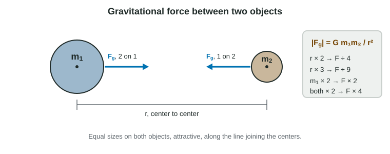

In 2.2 you met weight as "Earth pulls everything down with a force mg." That is a near-Earth shortcut. Here is the full story: every object with mass pulls on every other one, the pull weakens with distance in a precise way, and the reading on a scale is not the same thing as that pull.
Newton's law of universal gravitation

Any two objects with mass attract each other. The size of the force is
|Fg| = G m₁m₂ / r², with G = 6.67 × 10⁻¹¹ N·m²/kg²
Here r is the distance between the objects' centers, not the gap between their surfaces. For a planet or a sphere, treat all its mass as if it were at its center. The force always attracts, and it acts along the line joining the centers. The two objects pull on each other with forces of equal size: they are a third-law pair.
G is tiny, so the pull between everyday objects is far too small to notice. It becomes large only when one of the masses is a planet or a star.
The inverse-square form is what the exam tests most. Read it as factors:
| Change | Force becomes |
|---|---|
| Distance between centers × 2 | F ÷ 4 |
| Distance × 3 | F ÷ 9 |
| One mass × 2 | F × 2 |
| Both masses × 2 | F × 4 |
| Both masses × 2 and distance × 2 | F (unchanged) |
Careful with "height". A space probe at a height of one Earth radius above the surface is at r = 2R from the center, so it feels a quarter of its surface weight.
The gravitational field
Divide the gravitational force on an object by the object's own mass and you get the gravitational field, g = Fg/m. It tells you how hard gravity pulls on each kilogram at that place. At the surface of a planet of mass M and radius R,
g = GM / R²
For Earth this is 9.8 N/kg. Since N/kg is the same as m/s², g is also the acceleration of any object in free fall. Near the surface, over heights that are small compared with Earth's radius, we treat g as constant; that is where Fg = mg comes from.
Worked example 1. Find the gravitational field at the surface of the Moon (M = 7.35 × 10²² kg, R = 1.74 × 10⁶ m) and the weight there of a 300 kg lander.
g = GM/R² = (6.67 × 10⁻¹¹ N·m²/kg²)(7.35 × 10²² kg) ÷ (1.74 × 10⁶ m)² = 1.6 N/kg
Fg = mg = 300 kg × 1.62 N/kg = 4.9 × 10² N. The lander's mass is still 300 kg; only the pull on it is smaller than on Earth.
Apparent weight

A bathroom scale does not measure the gravitational force on you. It measures how hard it pushes up on your feet: the normal force. That reading is your apparent weight. It equals mg only when your acceleration is zero.
Worked example 2. A 50 kg student stands on a scale in an elevator that accelerates upward at 0.80 m/s². What does the scale read? Use g = 9.8 m/s².
Free-body diagram: FN (scale on student) up, Fg (Earth on student) down. Principle: Newton's second law, up positive.
FN − mg = ma, so FN = m(g + a) = 50 kg × (9.8 + 0.80) m/s² = 530 N
Earth's pull is still mg = 490 N. The scale reads more because it must both hold her up and speed her up.
The direction of the acceleration decides, not the direction of motion:
| Elevator | Acceleration | Scale reads |
|---|---|---|
| Starting upward, or stopping on the way down | up | more than mg |
| At rest or at constant velocity | zero | mg |
| Starting downward, or stopping on the way up | down | less than mg |
| Falling freely (cable cut) | g, down | zero: weightless |
In free fall, you and the scale fall together with acceleration g, so the scale need not push at all. You feel weightless, yet gravity still acts on you fully. Astronauts in the space station are in exactly this state: at their height Earth's field is still about 90% of its surface value, and they are falling around Earth together with the station.
Two kinds of mass
Mass shows up in two different laws. In ΣF = ma it measures how hard an object is to accelerate (inertial mass). In Fg = mg it measures how strongly gravity pulls (gravitational mass). Careful experiments find the two equal. That is why a rock with 10 times the mass of a pebble feels 10 times the pull but also has 10 times the inertia, and the two fall with the same acceleration, g. The idea that gravity and acceleration are indistinguishable from the inside of a closed box is called the equivalence principle.
Common slips
Using the surface-to-surface gap or the height instead of the center-to-center distance. Forgetting to square r. Saying a heavier object falls faster. Equating a scale reading with mg in an accelerating elevator. Saying there is no gravity in orbit. And arguing from F = mg that a planet with more mass has a smaller g: g is GM/R², which grows with M.